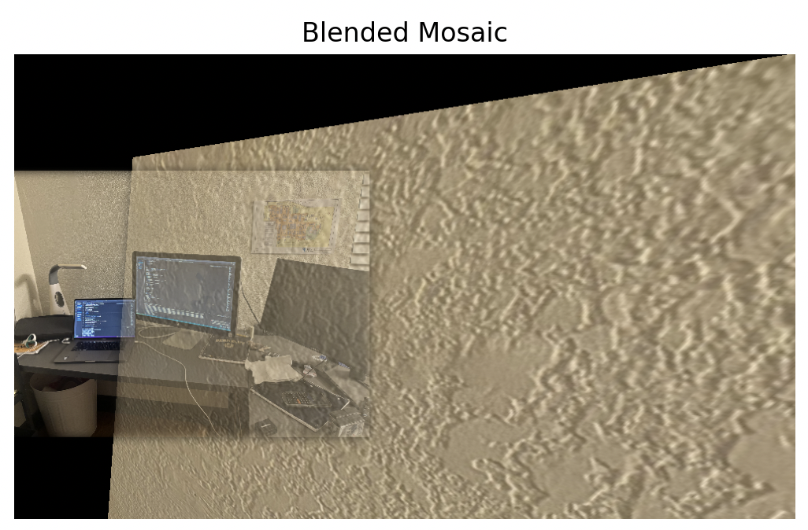
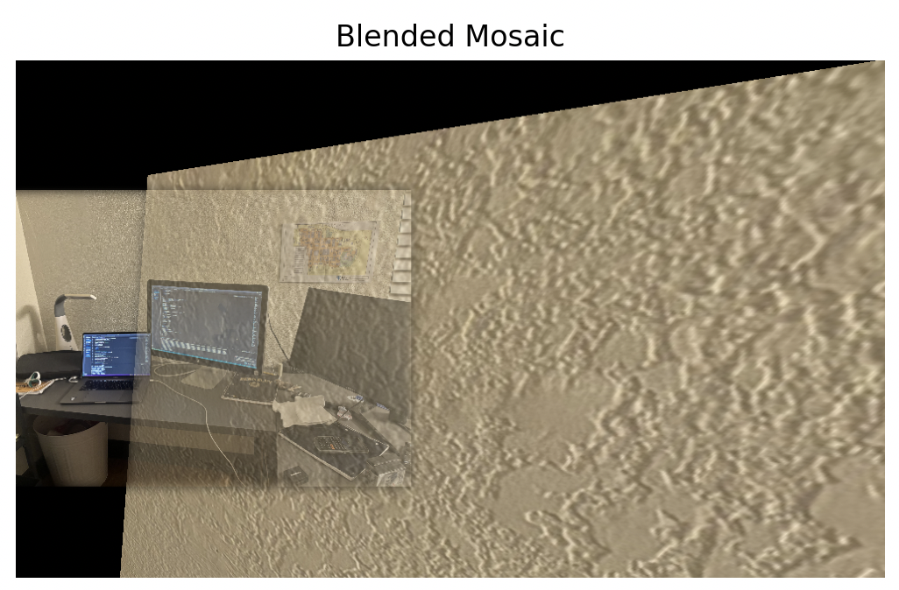
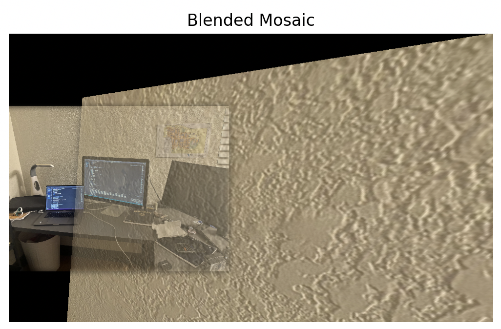

Sam's room

 

To achieve image rectification, I selected four corner points of a planar object in the input image. These points correspond to the corners of the object that I wanted to rectify. I used the computeH function, which implements the normalized Direct Linear Transformation (DLT) algorithm. The DLT algorithm calculates the homography matrix H that maps the selected points in the input image to the corners of a rectangle in the desired output image.
Using the computed homography matrix H, I employed the warpImage function to warp the input image. The warping involves inverse mapping from the output image coordinates to the input image coordinates, followed by interpolation to obtain pixel values. The result is an image where the planar object appears fronto-parallel, effectively rectifying it.
To create the image mosaic, I loaded two overlapping images (im2 and im3) that I wanted to stitch together to form a mosaic. I interactively selected 4 corresponding points in both images using the click_points function.
Using the selected correspondences, I computed the homography matrix H_32 that maps points from the right image (im3) to the left image's coordinate system (im2) using the computeH function.
I generated binary masks (mask2 and mask3) for the warped images to identify valid pixel regions. An overlap mask was created to identify overlapping regions between the two images.
A Gaussian blur was applied to the blending mask to ensure smooth transitions between the images. I applied the pyramid_blending function to blend the two images using Laplacian Pyramid blending.
